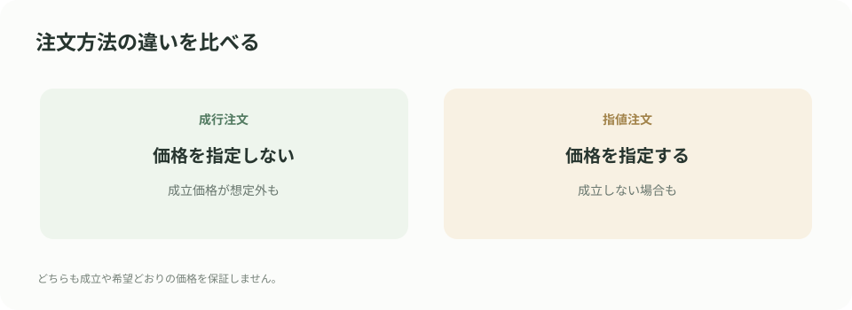

成行注文と指値注文の違い
成行注文は価格を指定しない注文で、値動きが大きい時は想定と異なる価格で成立する場合があります。指値注文は価格を指定しますが、指定価格に届かなければ成立しないことがあります。注文前に商品名、売買の別、数量、価格、手数料、有効期限を確認し、分からない場合は確定前に止まってください。

確認しておきたいポイント
- 商品や制度の最新条件を公式情報で確認する
- 手数料、値動き、元本割れの可能性を理解する
- 疑問が残る時は申込みや注文を急がない
成行注文は価格を指定しない注文で、値動きが大きい時は想定と異なる価格で成立する場合があります。指値注文は価格を指定しますが、指定価格に届かなければ成立しないことがあります。注文前に商品名、売買の別、数量、価格、手数料、有効期限を確認し、分からない場合は確定前に止まってください。
